Enquadrar, corrigir a luz, recortar um objeto e limpar defeitos, sem estragar o original
1. Uma foto de 1200 × 800 pixels, sem compressão, com 3 bytes por pixel, pesa…
2. Logotipo sobre uma faixa colorida do site. Qual formato?
3. No caderno, sem olhar: por que reduzir a resolução de uma foto antes de publicar?
"Gostei do diagnóstico. Agora preciso das imagens prontas: a foto do balcão saiu escura e grande demais para o banner do site. Quero a xícara do cardápio sem o fundo, para colocar sobre qualquer cor. E apareceram umas manchas na mesa da outra foto."
São três trabalhos típicos de tratamento de imagem:
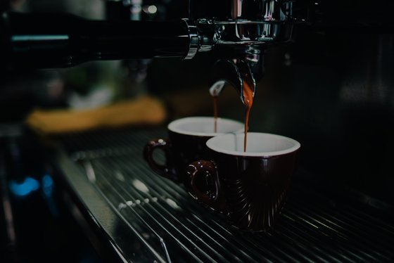
GIMP, camadas e canais
O GIMP (GNU Image Manipulation Program) é um editor de imagens para retocar fotos, compor e criar imagens, e converter formatos.
O mais conhecido no mercado é o Photoshop, da Adobe. Os conceitos desta aula valem para os dois: muda o lugar dos botões, não a ideia.
Ctrl + Z desfaz a última ação. O painel Histórico do desfazer mostra todas e permite voltar a qualquer uma.
Tab esconde e mostra os painéis.
Parar o mouse sobre uma ferramenta mostra para que ela serve.
Livro, p. 40, 43, 45 e 46.
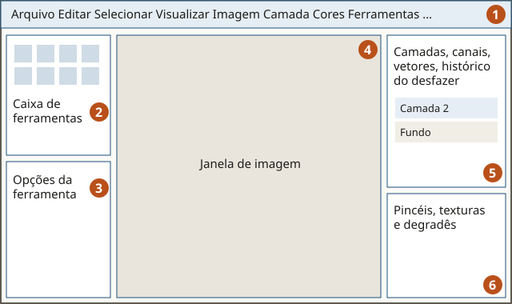
Livro, p. 43–46. Janelas soltas? Use Janelas → Modo de janela única.
Uma imagem pode ser feita de várias camadas, como folhas de papel transparente empilhadas. Cada uma guarda uma parte: a foto, a faixa, o logotipo.
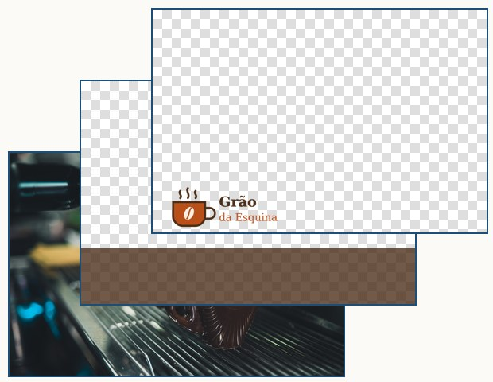
Livro, p. 41–42 e 45. Figuras nossas.
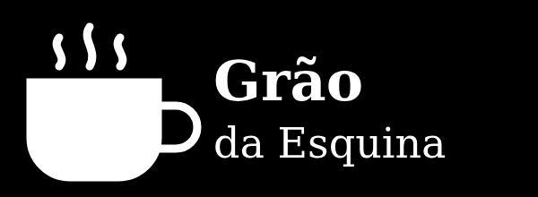
Cada pixel tem uma cor formada por canais. Cada canal guarda a intensidade de uma cor, de 0 a 255, e por isso aparece em tons de cinza: claro onde a cor é forte, escuro onde é fraca.
O quarto canal, o alfa, guarda a transparência: branco é opaco, preto é transparente. Uma camada sem canal alfa não fica transparente: ao apagar, ela é pintada com a cor de fundo.
Livro, p. 43 e 66. Figuras nossas.
Grava no formato do GIMP, o XCF, com camadas, canais e vetores. É o arquivo de trabalho: dá para abrir amanhã e continuar editando.
Navegadores não exibem XCF.
Gera uma cópia em JPEG, PNG ou outro formato, com as camadas juntas em uma só. É o arquivo para publicar.
O formato vem da extensão que você digita: banner.jpg ou xicara.png.
Livro, p. 80–82.
Do tamanho da câmera ao tamanho do site
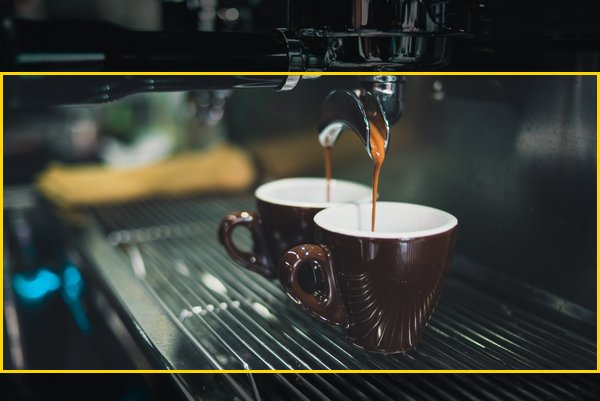
A ferramenta Cortar (Shift + C) remove tudo o que fica fora do retângulo que você desenha. Ajuste-o e aperte Enter.
Um banner costuma ser bem mais largo que alto. Nas opções, marque Fixo: Proporção e digite 2:1: a largura será sempre o dobro da altura.
Foto com 2400 de largura, em proporção 2 : 1 → altura de 2400 ÷ 2 = 1200 pixels.
Cortar também reduz o peso, porque os pixels descartados deixam de existir.
Livro, p. 71. Opção "Fixo: Proporção" e atalho: manual do GIMP. A proporção 2 : 1 é escolha nossa para o banner.
Imagem → Redimensionar imagem muda a resolução da imagem toda: a quantidade de pixels.
| Interpolação | Como calcula o novo pixel |
|---|---|
| Nenhuma | Copia o vizinho mais próximo. Rápido, mas serrilha. |
| Linear | Mistura os 4 vizinhos mais próximos. |
| Cúbica | Mistura os 8 vizinhos mais próximos. Em geral, melhor. |
| NoHalo, LoHalo | Métodos de alta qualidade. O NoHalo serve para reduzir muito. |
Livro, p. 69–70 e 73. Nomes do menu e métodos NoHalo e LoHalo: GIMP atual e seu manual.
| Ferramenta | Para quê | Exemplo |
|---|---|---|
| Rotacionar | Girar uma camada ou seleção. Com Ctrl, em passos de 15°. | Endireitar uma foto tirada torta |
| Espelhar | Inverter na horizontal ou na vertical | Fazer a pessoa da foto olhar para o texto |
| Mover | Mover camada, seleção ou vetor, escolhido nas opções | Posicionar o logotipo no banner |
| Alinhar | Alinhar camadas entre si ou à imagem | Centralizar um texto |
| Perspectiva | Deformar movendo os quatro cantos | Corrigir uma placa fotografada de lado |
Livro, p. 69–75. Exemplos e o aviso: nossos.
Menu Cores
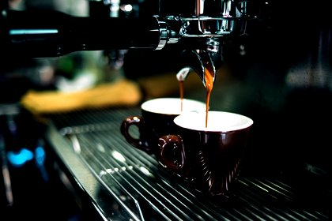
Livro, p. 77. Figuras nossas.
A janela Cores → Níveis mostra um gráfico da imagem:
Na foto escura, quase tudo se amontoa à esquerda, e a parte direita está vazia: não há tons claros. Uma foto equilibrada espalha os tons pela faixa toda.
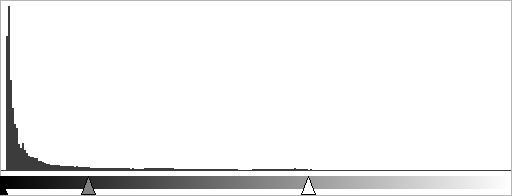
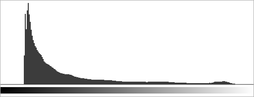
Livro, p. 78 ("caixa gráfica"). Leitura do gráfico: manual do GIMP, ferramenta Níveis. Gráficos nossos.
| Triângulo | O que faz | Nesta foto |
|---|---|---|
| Preto | Tons iguais ou abaixo dele viram preto | 0 |
| Cinza | Tons médios: para a esquerda clareia, para a direita escurece | gama 1,80 |
| Branco | Tons iguais ou acima dele viram branco | 154 |
Levar o triângulo branco até onde o gráfico termina (154) faz o tom mais claro da foto virar branco, e o resto se espalha. Depois, o cinza ajusta os tons médios.
Os níveis de saída fazem o contrário: apertam a faixa e reduzem o contraste.
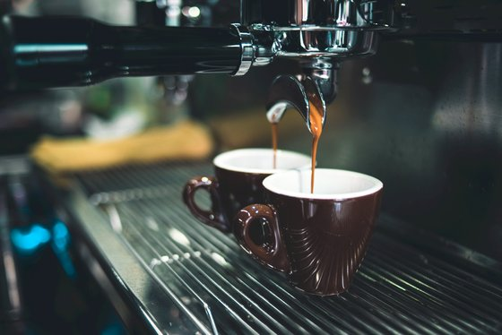
Livro, p. 78. Funções dos triângulos: manual do GIMP. Valores medidos por nós na foto do pacote.
Cores → Curvas mostra uma linha que relaciona o tom de entrada (horizontal) ao tom de saída (vertical).
Nesta curva, o tom 90 passou a 150: os tons escuros e médios clarearam, e os extremos ficaram no lugar.
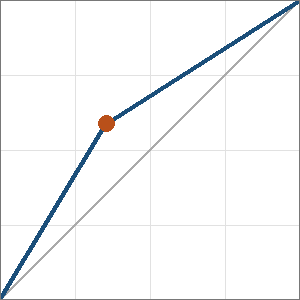
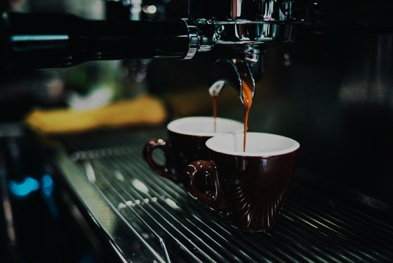
Livro, p. 79. Figuras nossas.
| Ferramenta | O que faz |
|---|---|
| Equilíbrio de cores | Puxa as cores entre ciano e vermelho, magenta e verde, amarelo e azul. Corrige foto "amarelada" ou "azulada". |
| Matiz-saturação | Matiz troca a cor; luminosidade clareia ou escurece; saturação deixa a cor mais viva ou mais cinza. |
| Colorizar | Pinta a imagem toda com um só tom, como o efeito sépia. |
| Limiar | Transforma em preto e branco puro, a partir de uma faixa de tons. |
| Posterizar | Reduz a quantidade de tons de cor. |
| Dessaturar | Converte em tons de cinza. |
Livro, p. 75–80.
balcao-escura.jpg.logo.png. Posicione com a ferramenta Mover.banner.xcf e exportar como banner.jpg, com qualidade 80.Resolução final.
Valores usados nos Níveis.
Peso do banner.jpg em bytes.
A resposta aparece aqui depois do próximo encontro.
Editar só o que você quer
Uma seleção delimita uma região da camada ativa. Tudo o que você fizer depois, como pintar, apagar ou ajustar cores, afeta só o que está dentro.
| Ferramenta | Como seleciona | Quando usar |
|---|---|---|
| Retangular e Elíptica | Desenhando um retângulo ou uma elipse | Objetos com formas geométricas |
| Livre (laço) | Arrastando ou clicando ponto a ponto | Contornos irregulares, feitos à mão |
| Contígua (varinha mágica) | Pixels de cor parecida, vizinhos do clique | Área de cor uniforme e borda bem definida |
| Por cor | Pixels de cor parecida em toda a imagem | Trocar uma cor que aparece em vários lugares |
| Tesoura | Pontos perto da borda; ela "gruda" no contorno | Objeto com borda nítida e forma complexa |
| De frente | Pré-seleção larga e pincel sobre as cores do objeto | Recortar um objeto do fundo |
Livro, p. 46–57.
| Tecla | Efeito |
|---|---|
| Shift ao começar | Adiciona à seleção anterior |
| Ctrl ao começar | Subtrai da seleção anterior |
| Ctrl + Shift | Fica só a interseção |
| Shift durante o desenho | Forma simétrica: quadrado ou círculo |
| Ctrl durante o desenho | Expande a partir do centro |
| Alt + arrastar | Move a seleção, não o conteúdo |
| Ctrl + Alt + arrastar | Move o conteúdo da seleção |
Os mesmos modos também aparecem como botões nas opções da ferramenta: substituir, adicionar, subtrair, interseção.
Um círculo com a seleção elíptica + Shift pega o corpo. Depois, com Shift ao começar, a seleção livre adiciona a alça.
Livro, p. 47–49 e 52.
A seleção contígua (varinha mágica) e a seleção por cor comparam cada pixel com a cor do pixel clicado. A diferença entre elas: a contígua só pega os vizinhos; a por cor pega a imagem toda.
O limiar diz quanto a cor pode variar e ainda ser selecionada. Ele usa a mesma escala de 0 a 255 dos canais.
Quadrados vermelhos (R 255) com verde e azul de 0, 50, 100, 150…
Com limiar 50: entram os que variam até 50 do vermelho puro.
Com limiar 100: entram também os que variam até 100.
Arrastar o mouse depois do clique muda o limiar na hora.
Livro, p. 52–54.
.png: o JPEG não guarda transparência.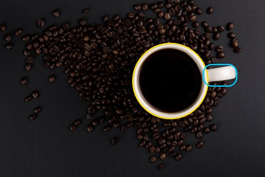
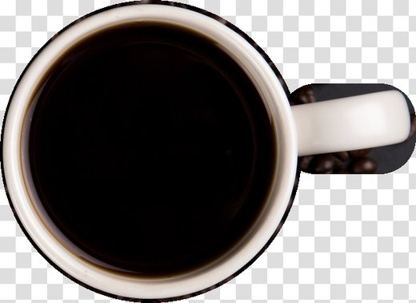
Canal alfa: livro, p. 43 e 66. PNG e transparência: p. 81. A sequência de menus é nossa, conferida no GIMP atual.
xicara-graos.jpg.xicara.xcf e exporte xicara.png. Exporte também xicara.jpg.O que aconteceu com o fundo no JPEG? Por quê?
Compare o peso do PNG e do JPEG.
Abra o PNG no navegador sobre uma página escura: o fundo some?
A resposta aparece aqui depois do próximo encontro.
A clonagem copia uma região da imagem para outra, como um carimbo que pinta com a própria foto.
A restauração funciona do mesmo jeito, mas mistura a cópia com a área ao redor. Fica mais natural em superfícies com textura, como uma mesa.
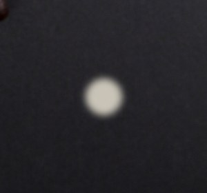
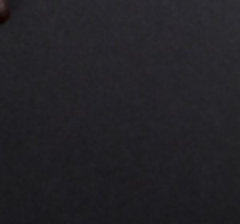
Livro, p. 66–68. Mancha acrescentada por nós à foto CC0.
mesa-manchas.jpg e encontre as quatro manchas claras na mesa.mesa-corrigida.jpg.
A resposta aparece aqui depois do próximo encontro.
Abra a Lista 2 e comece agora. Ela é feita no GIMP, com os mesmos passos das três práticas, e as fotos estão na pasta lista-2 do pacote.
Os arquivos XCF, JPEG e PNG e as respostas, pelo canal indicado.
Em casa, o GIMP é gratuito: gimp.org.
Estas máquinas voltam ao estado original quando reiniciam.
Hoje você tem arquivos de trabalho (XCF) e de publicação (JPEG e PNG). Os dois tipos precisam ir para a nuvem.
banner.xcf, banner.jpg, xicara.xcf, xicara.png e mesa-corrigida.jpg.
| Pedido do cliente | O que você usou |
|---|---|
| Banner escuro e grande | Cortar 2 : 1, Níveis, Redimensionar, camada do logo, JPEG |
| Xícara sem fundo | Seleção elíptica + livre, canal alfa, PNG |
| Manchas na mesa | Clonagem e restauração |
Entregue a Lista 2.
Leitura: livro, p. 39–83.
No encontro 3, o banner ganha texto, cores e composição: a identidade visual da Grão da Esquina.